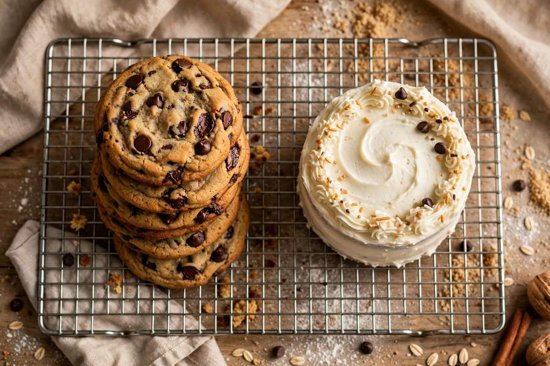
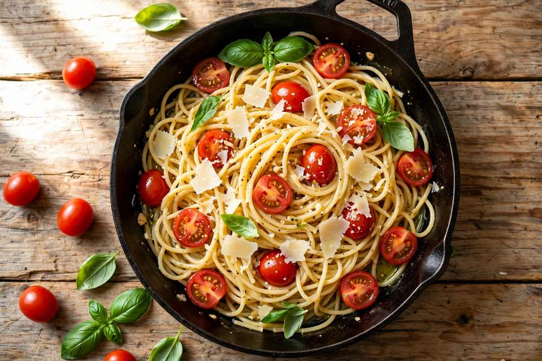
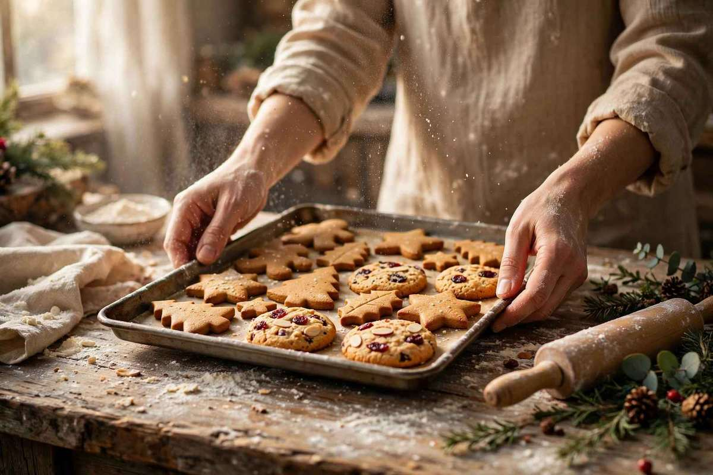

Welcome to The Tasty Recipe Co
What this kitchen is for, how the roundups work, and what is coming first — starting with Christmas.
The Tasty Recipe CoGet the Recipe →
✨ Christmas 2026 · Friday, December 25
The Tasty Recipe Co is a food blog built around recipe roundups for the moments that matter — a Christmas table, a busy weeknight, a slow Sunday brunch. Every roundup gathers real dishes with clear ideas for serving them.
Popular categories
Pick a category and start with the roundups planned for it — Christmas first, then the New Year.
Fresh from the kitchen
What this kitchen is for, how the roundups work, and what is coming first — starting with Christmas.

Desserts & BakingA festive roundup of Christmas cookies — classic, decorated, and made for gifting. Planned for the holiday season.
 Christmas & Holiday
Christmas & Holiday
The main Christmas meal, covered — roasts, mains, and sides for a holiday table worth gathering around.

Quick & Easy RecipesFestive starters and party bites for the Christmas table. Planned for the holiday season.
Slow-cooker Christmas dishes for a stress-free holiday table. Planned for the holiday season.
 Christmas & Holiday
Christmas & Holiday
Glazed and slow-cooked ham mains for the Christmas feast. Planned for the holiday season.
Party starters to ring in the New Year. Planned for the holiday season.
Lunch & Dinner
The New Year's Eve main meal, covered. Planned for the holiday season.
Sweet treats to celebrate the New Year. Planned for the holiday season.
Crowd-pleasing party food for New Year's Eve. Planned for the holiday season.
Browse by category
Six categories, thirty roundups planned — from fast weeknight dinners to the Christmas feast.

About the kitchen
The Tasty Recipe Co is a new food blog. We are starting with the holiday season — Christmas first, then the New Year — and building a library of recipe roundups you can actually cook from. New articles are added one at a time, and every article is checked live before the next one starts.
Everything is written in American English, and measurements use US customary units — cups, tablespoons, and Fahrenheit — for cooks in the United States.
More about us →New Christmas and New Year roundups are published one at a time. Follow The Tasty Recipe Co on Pinterest to save each one for later — and be first to the table when the next roundup goes live.
📌 Follow on PinterestFollow @thetastyrecipeco and save every roundup to your own boards.